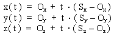
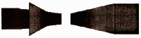
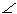

In order for an object to be visible to you, a ray of light must leave one of the light sources, bounce off the object, and reach your eye without bumping into anything else along the way. The idea behind ray tracing is simple: You can't see any light that doesn't enter your eye, so the only light rays that matter are the ones that do. To understand what you see, all we need to do is follow the path of the light rays backwards from your eye, and see if they eventually intersect a light source, perhaps after bouncing off of some objects along the way. If so, we render the objects appropriately. We'll see what 'appropriately' means later.
The important point here is to notice all the zillions of light rays that we never had to consider. All sorts of light is bouncing around our space, and we ignored most of it, because we only followed the rays that came back to your eye.
I've written a small ray-tracing application called tracer. You can download it from http://www.plover.com/~mjd/perl/RayTracer/. In the rest of this article, you'll see how it works.
We're going to be rendering your view into a rectangular 'canvas' of pixels. Let's say for concreteness that this canvas is 200 pixels tall by 320 wide. The first thing we do is to imagine a 'view plane' hanging in space in front of you. The picture above shows a rudimentary view plane, used by the artist Albrecht Dürer to help him study perspective and foreshortening effects.
Dürer's view plane has only 36 divisions, because he could fill in all sorts of detail into each of his divisions; ours is going to have 64,000 divisions, one for each pixel. (We're crossing Dürer and Seurat here.)
We'll compute the ray that starts at your eye and passes through the appropriate pixel on the screen, and perform some computations to see if it intersects any of the objects.
One tactic we can use to make things a lot simpler, at the expense of a little reality, is to just forget about the light sources. Instead, we'll just suppose that the entire space is uniformly lit from some invisible source. Each object will have a color, and if a ray strikes an object, we'll assume that we could have traced the reflected ray back to the omnipresent light source if we wanted to, and render the appropriate pixel in that color without actually following the ray any further.
How do we decide if the ray intersected an object or not? It depends on the object. For example, let's suppose that the object is a polyhedron. A polyhedron is made of faces, which are plane segments. To decide if the ray has intersected the polyhedron, we need to know if it has intersected any of the plane segments that contain its faces.
To do this, we first have to understand rays. The easiest way to represent a ray in the computer is with parametric equations. Imagine an insect flying along the ray; at each moment it has a particular x, y, and z position. Each of these depends on the time, so there are three functions that depend on the time t: x(t), y(t), and z(t). These tell you the x, y, and z coordinates of the insect at any given moment. The path of the insect is completely determined by these three functions. t is the 'parameter' that the parametric equations get their name from.
For straight lines such as light rays, the three equations are particularly simple. Suppose the ray starts at point (Ox , Oy , Oz ) and also passes through the point (Sx , Sy , Sz ). Then the three equations for the line are:

Figure 1: Parametric equations for a ray.
Mathematicians get tired of writing everything three times, so they have a shorthand. They represent points by single boldface letters, so that each boldface letter stands for the three coordinates of some point.
For example, we'll write O instead of (Ox , Oy , Oz ). For triples of functions like (x(t), y(t), z(t)), they use ordinary function notation with boldface, so they might write P(t) as an abbreviation for (x(t), y(t), z(t)), and the (t) in P(t) means the same as in x(t) : the whole thing still depends on t.
Then they play a trick, and call the boldface letters 'vectors' and say that you can add and subtract them. You don't need to worry about what that really means; it's just a notational shorthand, so that we can write simply
P(t) = O + t × (S – O)
instead of the three equations above. They mean exactly the same thing. The boldface tells you that it's standing for three equations instead of one; S – O is shorthand for the three expressions that look like (Sx – Ox ), so t × (S – O) is shorthand for the three expressions that look like t × (Sy – Oy ). The t isn't in boldface; that tells you that the t is the same in all three equations instead of having x, y, and z versions. The whole thing is shorthand for the three equations of Figure 1.
Now let's return to the polyhedron. Each face of the polyhedron is defined in terms of two parameters like this: F(u,v). We won't see a detailed example of this because we won't need it. The ray intersects the sphere if there are some values for u and v and some number d that satisfy:
P(d) = F(u,v)
Once we've found the point of intersection, P(d), we can figure out how far away from you it is; then if there are two points of intersection we just take the closer one, and render it; we can ignore the farther point because the closer one is in front of it, blocking your view.
To handle the complete polyhedron, we do the same thing for each face. We compute whether or not the ray intersects each face, and if it does, we make a note of where; then we find the closest of all the intersection points and render it. We can ignore the intersection points that are further away; you can't see them because the faces with closer intersection points are in the way. I'm going to skip the mathematics again.
To compute a low-resolution picture of 320x200 pixels, we need to send out 64,000 rays. If the space contains, say seven pyramids, nine cubes, and thirteen spheres, that makes 7 x 5 + 9 x 6 + 13 = 102 objects altogether and that means we have to compute 64,000 x 102 = 6,528,000 intersections in all. You can see that ray tracing even simple images requires either a very fast computer or a lot of time. Sometimes both. (In computer graphics, "We took a lot of time with a very fast computer" is often the answer. In Toy Story, the character 'Andy' had 12,384 hairs on his head, and Pixar had to render 114,240 frames of animation.)
Perl is not the best language for ray tracers, either, because Perl is pretty slow. For a good ray tracing demonstration that draws a reasonable picture before the seasons change, we have to cut some corners. We'll use a two-dimensional space instead of a three-dimensional space.
In two dimensions we have to forget about fancy things like spheres and pyramids, and restrict ourselves to straight line segments. These can represent walls, so we'll be rendering pictures of mazes, like this:
Figure 2: Bird's eye view of a maze
Why is this a win? Observers in two-dimensional spaces have one-dimensional retinas, and that means that the view plane, which was 320x200 pixels, becomes a view line 320 pixels long. Because there's no Y direction any more, instead of 64,000 rays, we only need to send out 320. That speeds things up about 200 times.
The picture that we draw should theoretically be 320 pixels wide by 1 pixel high, but unless you actually live in a two-dimensional universe you probably haven't learned how to interpret such pictures. We'll cheat a little to fake an appearance of height without actually having to compute a lot. We know that walls look smaller when they're further away, and the relationship between how far away they are and how big they look is very simple. Each time we trace a ray and find the wall that it intersects, instead of drawing one pixel, we'll draw a vertical line, and if we draw taller lines for nearer walls and shorter lines for farther walls, then the various parts of an oblique wall will appear to recede into the distance as the wall gets farther away from you. Here is the output of tracer for the maze in Figure 2:

Figure 3: tracer output for the maze in Figure 2.
This is an awful cheat, but does make things faster. Don't be quick to condemn it, because when the folks at id Software wanted to put real-time ray-traced graphics into their game DOOM, this cheat is exactly what they did. Nothing in DOOM is ever underneath anything else, because DOOM is a two-dimen-sional universe, and now you know why. Sometimes things seem lower than other things, but that's because they're faking height just the way we are. DOOM sold at least 250,000 copies, and you can't laugh at that kind of success. (DOOM also uses some other tricks that we'll see later.)
Let's suppose that our program knows where the walls are. A wall is just a line segment, and a line segment is completely determined by its two endpoints, let's say G and H. Remember that boldface letters represent entire points: three numbers in a three-dimensional space, or just an x and y coordinate in our flat space. The equation for a line segment is
P(t1 ) = G + t1 × (H – G) (0 t 1 1)
This is actually the equation of a line, not a line segment. When we find the intersection of our line of sight with P(t1 ), we won't immediately know whether the ray actually intersected the wall. But this equation also has some other properties that make it easy to decide whether a given point is actually on the segment of interest:
The ray we want to follow starts at O (for Observer) and passes through the point S on the view plane that we're going to render. (View line, really.) Its equation:
I(t2 ) = O + t2 × (S - O)(t2 0)
Again, this is the equation of a line, and that line passes through you. Since we'll be finding the intersection of this line with other lines, we'll need a way to decide if the intersection is in front of you or behind you. Happily, this equation has the properties that I(0) = O and I(1) = S. So if t2 is positive, I(t2 ) is in your line of sight, and if t2 is negative then I(t2 ) is behind you.
Computing an intersection between P(t1 ) and I(t2 ) requires finding two parameters, t1 and t2 , such that P(t1 ) = I(t2 ). There are two unknowns here, t1 and t2 , and even though it looks like there's only one equation, the equation has boldface letters in it. That means it's shorthand for two equations, one involving x and one involving y, so finding the appropriate values for t1 and t2 is a simple exercise in high school algebra which we'll omit because it's tedious, just like everything else in high school.
If you think you might enjoy the tedium, examine the program's Intersection() subroutine. My advice is to solve the problem on paper first, and then look at the code, because that's what I did to write it. This is an important general strategy for writing programs that need to do calculations: Don't try to have the program actually do any mathematics, because mathematics is hard, and programming it is ten times as hard. Instead, do the mathematics yourself, until you get a totally canned solution that only requires that the numbers be plugged in, and then implement the canned solution.
The interesting part of the equations is the special cases. The equations for t1 and t2 turn out to be quotient of two quantities, A and B, and B turns out to be zero only when the wall is parallel to your line of sight. In this case the equations have no solution because they're going to see what part of the wall you see, and if your line of sight is parallel to the wall you can't see any of it. (In the code, B is stored in the variable $DEN.)
If t2 turns out to be negative, the wall is actually behind you. and you can't see it, like this:
Figure 4: t2 is negative, so the wall must be behind you.
If t 1 < 0, or if t 1 > 1, then your line of sight misses the wall entirely, and you'll see past it to something else, like this:
Figure 5: A missed ray.
In these cases we shouldn't render part of the wall. But if t2 > 0 and t1 ³ 0 and t1 1, then we have a real intersection, and your line of sight will intersect the wall if it hasn't intersected something else closer. TrueIntersection() checks for these special cases.
The main part of the program is structured like this:
for $p (0 .. 319) {
Compute the appropriate point S on the view plane
Compute the line of sight ray through S
foreach wall (all the walls) {
if (the lines of sight intersects the wall) {
find the intersection point X
if (X is nearer to you than N) {
N = X; W = wall;
}
}
}
# W is now the nearest wall in the line of sight,
# and N is the point that you see
Figure out what color W is
Figure out how far away N is
Render this part of W appropriately
}
There's some code up front that reads a configuration file that says where the walls are, and some code at the end to print out the rendered image in a suitable format, but the important part is right there.
The only interesting part of this that we haven't seen yet is 'render appropriately'. What that means is this: Objects get smaller in proportion to how far away they are, so compute h = 1/d, where d is the distance that the wall is at. Multiply h by an appropriate constant scaling factor, and the result is the apparent height of the wall, in pixels. In this program, the scaling factor we use arranges that a wall at distance 1 exactly fills the canvas; a wall at distance 2 fills half the canvas, and so on. Then 'render appropriately' means to color the pixels from to 200 – in whatever color the wall is.
Input is simple. The file you provide contains descriptions of walls, one on each line. Each line should have the x and y coordinates for each of the wall's two endpoints, and a fifth number that says what color the wall is; these colors go from 0 to 360, with 0=red, 120=green, and 240=blue. Blank lines are ignored, and comments begin with a #, just like in Perl. You can find some samples files on my site.
The program understands a number of command-line options: -X and -Y set the size of the output picture, in pixels, and default to 320 and 200, respectively. Normally, the observer is at position (0,0), facing north; to change this, use -P X,Y,F where X and Y are the x and y coordinates you want, and F is the facing you want, with north=0 and east=90. For example, to position the observer at x=3, y=5, facing northwest, use -P 3,5,315.
Figure 6 illustrates the meaning of some other command-line parameters. You are at P, looking in the direction of the arrow. The view plane is the perpendicular segment from Sl to Sr. The -d command-line argument controls the distance between P (you) and the view plane; the default is 1. Object heights are computed relative to this distance, so if you make it too close, everything else will look really far away in relation. The -a option sets your range of vision. In the picture, that's the angleSl PSr . The default is 90 degrees, so that you will be able to see 1/4 of the space. You can set this parameter to any value larger than zero and less than 180°. Making it smaller will give you tunnel vision, and making it larger will turn you into a frog that can see on both sides of its head at once. Zero would mean that the view plane would have zero length, and 180° would give the view plane infinite length. Both are hard to divide into pixels, so tracer won't let you choose such extreme values.
Figure 6: d, the distance between you and the view plane.
I had a conundrum in designing the output routine. The ray tracer has to emit graphics in some format. GIF was an obvious choice, but GIF files are complicated, and I would have needed to use the GD library to write them. I didn't want to make everyone get GD just to run my ray tracer, so I made what might turn out to be a bad decision. I had tracer write its output as PPM.
PPM is an extremely simple 24-bit color graphics format; it was designed to be used as an interchange format, which means that if you need to convert from weird format X to weird format Y, you probably don't have an appropriate converter program - but you might very well have a program for converting X to PPM and another from PPM to Y. PPM is simple and fairly common; many popular image display programs can display it. For example, if you have the X Window System program xv, just say tracer | xv - . If your program can't display PPM files, get netpbm from ftp://ftp.x.org/contrib/utilities/. It includes programs to convert PPMs into nearly every graphics format imaginable.
There are two important sets of data in this program. One of these is the rendering canvas that the program draws on; the other is the collection of lines and vectors used to compute what you see.
The rendering canvas is a 320x200 array of pixels, where each pixel has three numbers from 0 to 255 representing the red, green, and blue intensities at that point. This is stored as an array of 200 strings, each with 320 x 3 = 960 characters. To set the color of the pixel in row $y and column $x, you just use a simple assignment:
substr($canvas[$y], $x*3, 3) = "j4K";
To make it black, you assign the string "\x0\x0\x0"; to make it bright green, assign "\x0\xff\x0". (ff is the hexadecimal code for 255, the maximum possible value.) Assigning to substr() can be slow, because if the assigned-to string changes length, Perl has to copy the end part of it to a new position. But we don't care, because our strings always have exactly three characters.
It so happens that these 320 strings are already in PPM format (I told you it was simple), so the output function is about two lines long. Another win for PPM.
Points and vectors in the program are represented as references to lists with two elements: [$x, $y] is the point (x, y). There are a bunch of utility functions for adding vectors, scaling them, and so on; most of these are pretty simple. Here's an example: the Partway() subroutine. It take three arguments: two points and a number t, and computes a third point partway between the two points, t of the way from the first to the second. If t = 0, you get the first point back; if t = 1/2 it finds the point halfway between the two points; if t = 2/3 you get the point 2/3 of the way from the first point to the second.
sub Partway {
my ($p1, $p2, $t) = @_;
[($p1->[0] * (1-$t)) + ($p2->[0] * $t),
($p1->[1] * (1-$t)) + ($p2->[1] * $t)
];
}
Lines, rays, and line segments are also references to arrays. Each array has three elements; the third is a string identifying the type: either SEGMENT, RAY, or LINE. The first two items in each array are two points. For segments, they are the two end-points; for rays they're the endpoint and any other point; for lines they're just any two points on the line. All lines in this program are assumed to be parameterized in terms of these two points. That is, if the program needs a parametric equation for the line [$p1, $p2, WHATEVER], it just uses P(t) = p1 + t × (p2 – p1 ) which, as we've seen, has convenient properties.
Ray tracing is such a useful and flexible idea that there are a lot of directions you can go. Here are just a few.
Sorting the Objects. If there are a lot of objects in the space, you can get a big performance win by sorting the objects into a list with the nearest objects first. Then when you're looking for intersections, you can try them in order from nearest to farthest. Near objects are likely to occlude farther objects, so doing this can save you from having to check a lot of far-away objects for intersections if you can decide that they'd be invisible anyway. Good-quality ray tracing software always does this.
Mirrors. One fun and easy feature that this program omits is mirrors. Mirrors are awfully easy to handle in ray tracing software: when the line of sight intersects a mirror, you just change direction as appropriate and keep following it to its final destination. Ray tracing was invented in the early 1980's and caused an immediate outpouring of computer-generated pictures of stacks of ball bearings, Christmas tree ornaments, chrome tea-pots, and other shiny items. An excellent beginning project would be to add reflective walls to this ray tracer.
Light Sources. We made the simplifying assumption that there were no specific sources of light, and that the whole space was uniformly lit from all directions. That was convenient, but not realistic. OMAR (Our Most Assiduous Reader) might like to try to add real light sources to this ray tracer. One complication: When the line of sight hits a wall, it scatters, and you have to follow every scattered ray to see how many of them make it back to the light source. You can tackle this head-on, if you have a big enough computer, or you can devise some clever ways to cheat.
If you're going tackle the problem head-on, you end up following a lot of useless rays, and at some point you're doing so much work that it makes more sense to just start at the light source and follow the rays forward instead. Rays start out with a certain intensity when they leave the source, and every time they reflect, you compute how far they've travelled and how much was absorbed in being reflected, and follow the new, dimmer rays, until you find the ones that reach the observer's eye. This is called radiosity modeling. It wasn't popular as long ago as backwards ray tracing, because it requires so much more computer power. As computers have gotten better, radiosity methods have become more common.
Stereoscopic Images. One nifty trick you can play for cheap is to render the same space from two slightly different positions, and then put them in a stereoscope. A stereoscope is a gadget that presents one picture to each eye at the same time; if the two pictures depict the same scene from slightly different positions, your brain will be fooled into seeing the scene in three dimensions. Details vary depending on what kind of stereoscopic equipment you have. If you have red-and-green 3-D glasses, then run the ray tracer in grayscale mode with the -G option, use image modification software to make the left one pink and the right one green, and superimpose them.
If you don't have a stereoscope or 3-D glasses, you can make a cheap stereoscope with a small pocket mirror. Reverse one of the images left-to-right, print them out, and arrange the two pictures side by side on a table. Hold the mirror perpendicular to the table, between the pictures, silvered side facing left. You should see the right image with your right eye, and the reflection of the left image with your left eye. Adjust the mirror, the pictures, and your head until the left and right-eye images are superimposed.
Texture Mapping. The walls drawn by tracer are single-colored. But it's quite easy to render walls covered with arbitrarily complicated wallpaper. The intersection computation knows how far along the wall the intersection with the line of sight is, and from that we can compute what point of the wallpaper you're looking at, and so what color to draw. This is quick and easy, and it's the second big trick that DOOM uses to get good-looking pictures. This wallpapering technique is called texture mapping.
More Interesting Objects. In this program, everything is a wall, and all the walls are the same height. That makes it easy to draw the picture, because walls are simple, and if they're all the same height, you can't see over one to what's behind it. But the pictures are pretty dull. OMAR might like to modify this ray-tracer to support variable-height walls. With walls of uniform height, we just computed the intersection with the nearest wall, rendered that wall, and threw away the other intersection points. Now we have to retain all the intersection points, and render all the visible walls, starting from the furthest and working toward the nearest, overwriting older walls with nearer ones as appropriate.If you do this, walls don't have to start at the ground and go up; they could start in the air, or they could be very tall walls with horizontal slots in them, or whatever you like; you get all that for free. DOOM does this too.
OMAR didn't materialize this time, so I had to be OMAR. I made some changes to the Regex.pm module to add the . metachar-acter; that only took eight lines! I was encouraged by that, so I added general character classes. These patches, a few errata, and anything else will be available at http://www.plover.com/ ~mjd/Regex/.
It's not too late to suggest a name for this column, and I really need one, so please do send suggestions to mjd-tpj@plover.com. Suggestions should characterize the subject matter (so far: Infinite Lists, B-Trees, How Regexes Work, Ray Tracing) or sound cool.
__END__
{kind=link}
{kind=link}
{kind=link}
{kind=link}